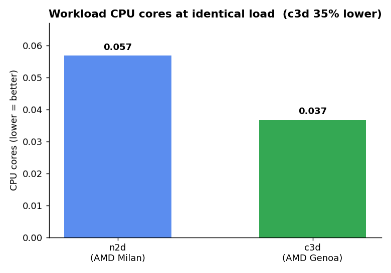
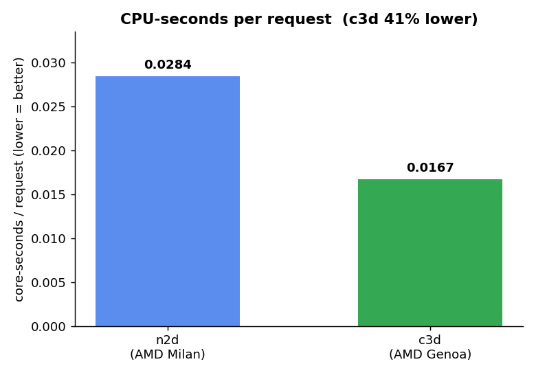
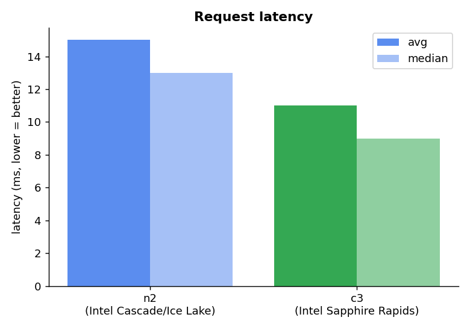
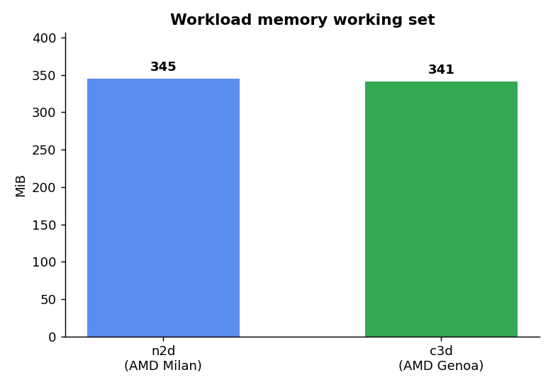

Online Boutique — Processor Benchmark
2-way comparison · identical Locust load · Managed Service for Prometheus + Grafana
c4 used 9% less CPU than c3 at identical load.
Comparison
| Platform | CPU cores | Memory (MiB) |
Median lat (ms) | Avg lat (ms) | req/s | Requests |
|---|
c3
Intel Sapphire Rapids | 0.0415 | 335 | 9 | 11 | 2.70 | 1682 |
c4
Intel Emerald Rapids | 0.0379 | 335 | 8 | 9 | 2.00 | 1769 |
Lower CPU at identical load = more efficient. Latency/throughput from Locust.
Charts

chart-cpu.png
chart-cpu-per-req.png
chart-latency.png
chart-memory.png
Raw files